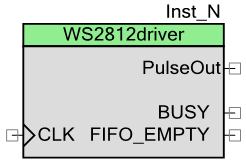
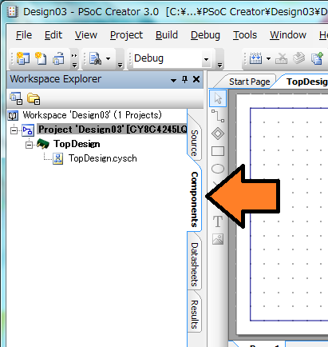
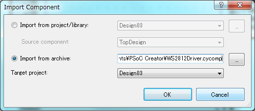
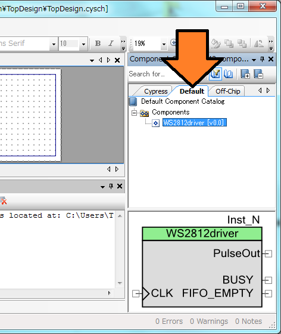
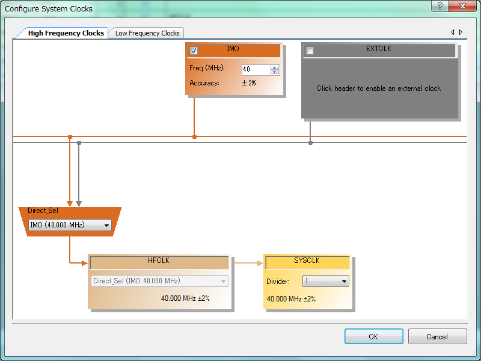
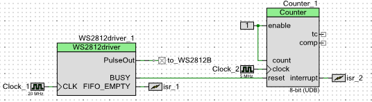
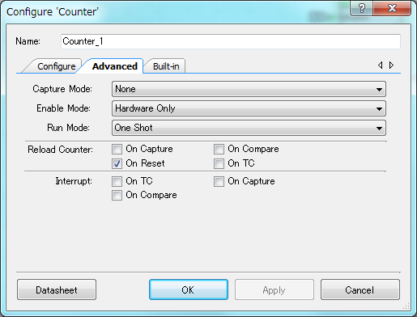

PSoC WS2812B driver Component
Neo Pixel LED WS2812 を駆動するためのUDBを使ったPSoCコンポーネントの使い方について．
(PSoC4で動作を確認していますが，3や5でも動くと思います．)

コンポーネントをダウンロード
PSoC Creator で使用するコンポーネントをダウンロードには ここからWS2812Driver.cycpmpをダウンロード して下さい．
コンポーネントをインポートする
PSoC Creator の左側にある Workspace Explorer の Component タブを開きます．

Workspace Explorer 上で右クリックし， Import Component... を開きます．
Import from archive を選択し，ダウンロードしたファイルを読み込みます．

すると，PSoC Creator の右側にある Component Catalog の Default タブの中にインポートしたコンポーネントがあるので，デザインにドラッグ&ドロップできるようになっています．

クロックの設定
WS2812へ入力するパルスは決まった時間幅を持つ必要があるので，WS2812 driver に供給するクロックも決まった周波数である必要があります．
このコンポーネントでは20MHzをCLKに入れる必要があるので，HFCLKはその倍の40MHz以上としなければなりません．
この理由からPSoC4ではこのような設定になります．
(外部クロックが利用できるならEXTCLKを利用するのがベターです)

{kind=link}
デザイン
たとえば，こんな感じに接続するとよいでしょう．

WS2812BdriverのFIFO_EMPTYピンは内部のFIFOが空になるとHになります．この立ち上がりエッジを利用して割り込みをかけることで，連続したデータを流すことができます．
FIFO_EMPTYがHのとき，FIFOへはWS2812driver_write2fifo()を使って最大で9バイトを流しこむことができます．
また，BUSYピンはパルスの出力処理中にHになります．FIFOが空になっても新しいデータが書き込まれない場合に処理が完了し，L出力になります．
BUSYピン出力を使って周期が50usのカウンタを回すことで，50usのリセットパルスの出力に役立ちます．
今回はカウンタへ入力するクロックを5MHzとしたので，カウンタの設定はこんな感じが良いでしょう．
Period=249で50usになります．

ワンショット動作にしたいのでAdvanceタブはこんな感じに．

コーディングのtips
WS2812へ送り込むバイト列は，GRBの順で送り込みます．
そこで，構造体を利用してドライバを叩くことでコードがすっきりします．
typedef struct _RGB_tag{
unsigned char g;
unsigned char r;
unsigned char b;
} rgb_tag;
void hoge(){
rgb_tag rgb[] = { {hoge1, hoge2, hoge3} , {foo1, foo2, foo3}, {bar1, bar2, bar3} };
WS2812driver_1_write2fifo((unsigned char*)rgb, 9);
}